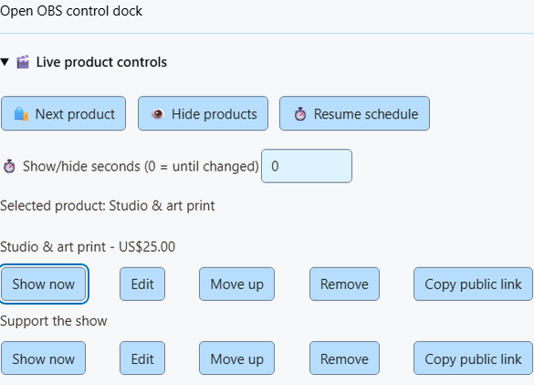
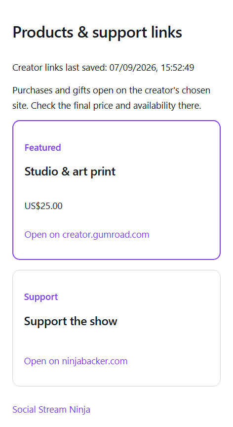

Add a product in 5 steps
- Avatud Monetization → Products & support links → Set up products and links.
- Paste a public
https://link and click Load details from link. - Check the title, image, price, currency, and Link purpose. The price is left blank, so type it in if you want one.
- Klõpsake Add product or link.
- Lülitage sisse Products & support links and click Save setup.
Shop, Gift, Support, and Join only label the link. They don't change how payments count. Cards are snapshots; checkout has the real price and stock.
Control what's on screen
Add the Products & support links overlay to OBS (Showcase and alerts also shows alerts). Then use these buttons:
| Button | Mida see teeb |
|---|---|
| Show now (on a saved product) | Shows that product right away, ignoring the schedule. |
| Next product | Shows the next saved product. |
| Hide products | Hides product cards. Purchase and gift alerts still show. |
| Resume schedule | Goes back to your saved rotation or pinned first product. |
Määra Show/hide seconds esiteks. 0 = until you change it. 1–3600 = back to the schedule after that long.


Good to know
- Live changes reset when SSN restarts.
- On Stream Deck, a missing saved product stays shown on the key instead of quietly switching.
- Unsaved products are marked. Their Show now button stays off until you click Save setup.
- The status shows the chosen product and seconds left. It can't tell whether OBS is live or the source is visible.
- Products are found by their exact saved link, so reordering the list won't break automations.
Want buttons inside OBS? Use the OBS product control dock. Keep controls off the audience overlay.
Give viewers one link
- Avatud Display options → Public viewer page.
- Klõpsake Publish saved links. This makes all your saved products public: titles, images, prices, and purposes.
- Klõpsake Copy viewer link and share it.
Product QR codes point here, so viewers find a product even after it leaves the screen. Saves and live controls update the same link. The page refreshes every 15 seconds, marks the featured product, and lists everything even when cards are hidden.


| ma tahan… | Tehke seda |
|---|---|
| Take the page down | Klõpsake Unpublish. Old links stop working, and QR codes go back to each product's own link. |
| Get the same link back | Publish again from the same computer. |
When SSN is offline or the server is down
- The last published page stays up while SSN is off, with the time it was saved.
- “Featured” means your last saved choice or rotation. It doesn't mean you're live.
- If the server is down, the controls in SSN still work. Updates retry while SSN is open, and the popup shows the error.
- Publishing needs the optional public-shop service on the server. No store or payment account is involved.
Stream Deck and Event Flow
Stream Deck
- Lisa Preset Command keys from Products & support: Show product, Next product, Hide products, or Resume products.
- For Show product, klõpsake Refresh products and state and pick a product. Or paste its public link, or leave it blank for the current or first product.
- For Next ja Hide, add seconds if you like.
The optional Product State key shows what's selected, hidden, or scheduled (every 5 seconds; long names are shortened). Keys use your existing P2P or WebSocket connection and wait for SSN to confirm.
Event Flow
- Add the Products & Support action from the overlay actions group.
- Pick Show, Next, Hide, or Resume. Add an exact saved product link and seconds if you like.
- Trigger it with something you control, like a moderator command, not every chat message.
Remote API (advanced)
The session remote API takes show, next, hide, või resume. Host controls must be on. Leave out url for the current or first product.
{"action":"commerceControl","command":"show","url":"https://example.com/product","seconds":30}Know when a control finished
- Commands only send the existing
monetization_updatedisplay state.hasDonationbehavior is unchanged. - The Products & Support action waits for SSN's reply before the flow continues.
- On event payloads,
meta.commerceControlResulthassuccessplus either the newcommercestate or anerror. - A failure stops later actions in that chain. The original purchase or tip still reaches other flows and overlays.
- The result confirms SSN's selection, hidden state, or schedule. It doesn't confirm OBS is showing it.
- No reply in eight seconds means a timeout. The control may still have worked, so check the popup or dock before pressing Next again.
- External remote clients should use the request/reply protocol and check the result, not assume a sent command worked.
- Other actions report their own results: Print Thermal Label gives
meta.thermalPrintResult(a sent job doesn't prove it printed), and a synchronous Webhook action can return the HTTP status and response, and can stop on failure. These are action results, not new payment events.
Vt event reference for the full result format.
Probleemide lahendamine
| Probleem | Proovi seda |
|---|---|
| Show now is greyed out | Klõpsake Save setup esiteks. |
| My live change undid itself | SSN restarted, or the seconds ran out. Set Show/hide seconds juurde 0 to keep it. |
| Load details from link found nothing | Type the details in by hand. |
| Viewer page shows old products | Keep SSN open so it can retry, and check the popup for an error. |
| Event Flow action timed out | It may still have worked. Check the popup or dock before trying again. |
Creator store setup · Commerce sounds, actions and printing · Event reference